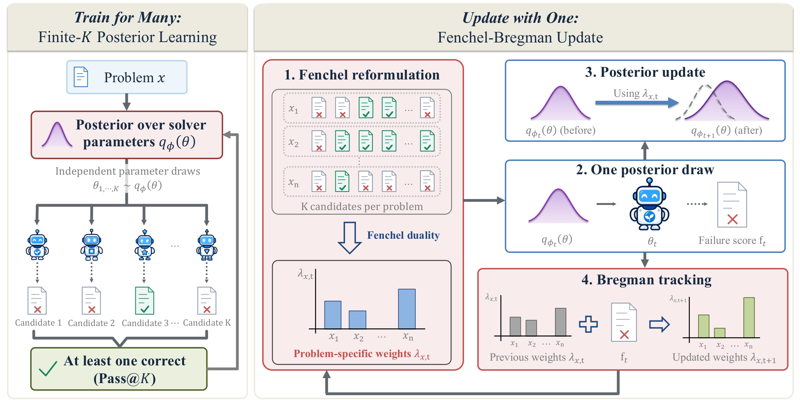
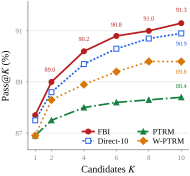
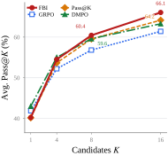

Train for Many, Update with One
Improving Multi-Sample Reasoning via
Fenchel–Bregman Posterior Learning
Train for at least one correct candidate.
Use one posterior draw per update.
1 RIKEN AIP · 2 Yonsei University · 3 Sapienza University of Rome
4 TU Darmstadt · 5 Hessian.AI
Why multi-sample training?
What matters is whether one candidate succeeds
When a model gets K attempts, the useful outcome is a pool containing at least one correct answer. Training each sampled solver in isolation does not directly optimize that outcome.
We learn a distribution over solver parameters, so independent draws produce different candidate solvers. Finite-K posterior learning trains this distribution for the coverage of the whole candidate pool. Fenchel–Bregman IVON (FBI) makes that training practical with one new parameter draw per update.

Based on the paper’s introduction and Figure 1.
How it works
Train for K candidates. Update with one draw.
FBI starts with the success criterion at inference, then separates the training objective into a weighted posterior step and a failure-tracking step.
-
Learn to avoid a pool of failed answers
For independent candidates, raising the individual failure probability to K gives the probability that every candidate fails. We minimize this all-fail probability across training problems, with KL regularization toward a reference prior. Ktrain sets the candidate-pool size we train for.
\Pr\!\left(\text{all }K\text{ fail}\mid x\right) = \bar{F}_{\phi}(x)^K\bar{F}_{\phi}(x) is the failure probability of one sampled solver on problem x.
The learning signal puts more weight on problems that the other candidates are unlikely to solve.
-
Fenchel: enable a weighted one-draw update
A direct Monte Carlo update needs K parameter draws to estimate the pooled failure objective. Fenchel duality rewrites this objective so that, with a problem’s weight held fixed, the posterior step can use one new draw.
\lambda_{x,t} = K_{\mathrm{train}}\,\widehat{f}_{x,t}^{\,K_{\mathrm{train}}-1}The running failure estimate \widehat{f}_{x,t} determines the weight \lambda_{x,t} for each problem.
FBI samples the solver parameters once and uses these fixed weights in an IVON posterior update.
-
Bregman: reuse the observed failure
The failure probability changes as the posterior learns. A closed-form Bregman update tracks that change through an exponential moving average, using the failure score already observed in the posterior step.
\begin{aligned}\widehat{f}_{x,t+1} &= \beta\,\widehat{f}_{x,t} \\ &\quad + (1-\beta)\,f(\theta_t,x)\end{aligned}\beta controls how much history to retain; f(\theta_t,x) is the observed failure score.
The updated estimate supplies the next visit’s weight, without drawing another solver to estimate it.
Fenchel identity and training details
For a failure probability r and K\geq 2, Fenchel conjugacy gives the exact identity below, with optimal weight \lambda^\star=Kr^{K-1}. The conjugate penalty \psi_K depends on the weight, so it is constant during a fixed-weight posterior step.
One draw means one parameter vector. In the language-model experiments, that vector is shared across eight responses per prompt during a training update.
In practice, f is a bounded failure score. When it differs from binary failure, training uses a score-based surrogate of the exact all-fail objective.
See Section 3 and Algorithm 1 for the full derivation.
Results
Does the learned posterior improve candidate coverage?
We test FBI on recursive solvers and an autoregressive language model. The curves show how often at least one answer is correct as the number of candidates increases.
Pass@K measures candidate coverage, rather than the accuracy of a selector’s final answer. These curves compare equal numbers of candidate attempts.


Recursive reasoning benchmarks
FBI uses TRM for this comparison. The table below reports candidate coverage; selected accuracy is reported separately in the paper.
| Method | Sudoku-Extreme Pass@10 | Maze-Hard Pass@10 | ARC-AGI-1 Pass@100 | ARC-AGI-2 Pass@100 |
|---|---|---|---|---|
| TRM | — | — | 59.50 | 11.53 |
| PTRM | 97.38 | 88.40 | 60.25 | 11.94 |
| W-PTRM | 98.84 | 89.80 | 61.25 | 10.69 |
| FBI (ours) | 99.55 | 91.30 | 64.25 | 12.78 |
Only methods with reported values in these coverage columns are shown. FBI’s Sudoku-Extreme and Maze-Hard Pass@10 values are means over three training runs. See Table 1 for all metrics and protocols.
Mathematical reasoning benchmarks
All methods use Qwen3-4B-Base. FBI trains on MATH7.5K with Ktrain = 8; the average below weights each evaluation benchmark equally.
| Method | MATH500 | OlymMATH | AMC23 | AIME24 | AIME25 | Average |
|---|---|---|---|---|---|---|
| Base | 87.80 | 53.57 | 75.18 | 34.15 | 21.56 | 54.45 |
| GRPO | 90.17 | 61.96 | 79.07 | 27.96 | 24.95 | 56.82 |
| Pass@K Training | 92.48 | 62.24 | 82.64 | 34.64 | 25.76 | 59.55 |
| DMPO | 91.37 | 61.45 | 84.68 | 34.65 | 25.84 | 59.60 |
| MaxRL | 91.23 | 62.26 | 83.07 | 28.08 | 30.21 | 58.97 |
| MMPO | 89.91 | 58.99 | 81.87 | 26.89 | 25.17 | 56.56 |
| FBI (ours) | 91.64 | 60.68 | 85.20 | 31.00 | 33.70 | 60.44 |
FBI has the highest average Pass@8 (60.44%) among the evaluated methods. See Table 2 for the full comparison.
Training efficiency
Similar Pass@10. Lower cost per update.
FBI targets the same ten-candidate objective as Direct-10 with one parameter draw per update. On matched Maze-Hard runs, it achieves comparable candidate coverage using 12.3% of Direct-10’s training time per update.
FBI91.3%
Direct-1091.0%
Mean Pass@10
Repeated-run endpoint coverage
Resources per training update
Direct-10 = 100% · shorter bars use fewer resources
Matched TRM comparison on Maze-Hard · Ktrain = 10 · one RTX A6000 48 GB GPU · bfloat16 · compilation disabled.
Exact measurements and benchmark setup
| Resource | FBI | Direct-10 |
|---|---|---|
| Posterior draws / update | 1 | 10 |
| Time / update (s) | 0.0692 | 0.5614 |
| Counted FLOPs / update (×1012) | 0.427 | 4.087 |
| Peak allocated GPU memory (GB) | 0.611 | 3.707 |
Coverage uses repeated-run endpoint means; resources were measured separately in a 30-update benchmark. The FLOP counter does not include every elementwise operation. See Appendix B.6 and Table 9 for the measurement protocol.
Reference
Citation
@misc{lim2026train,
title={Train for Many, Update with One: Improving Multi-Sample Reasoning via Fenchel-Bregman Posterior Learning},
author={Sungjun Lim and Adrian Robert Minut and Nico Carlsen Daheim and Mohammad Emtiyaz Khan and Kyungwoo Song and Thomas M{\"o}llenhoff},
year={2026},
eprint={2610.17735},
archivePrefix={arXiv},
primaryClass={cs.LG},
url={https://arxiv.org/abs/2610.17735}
}